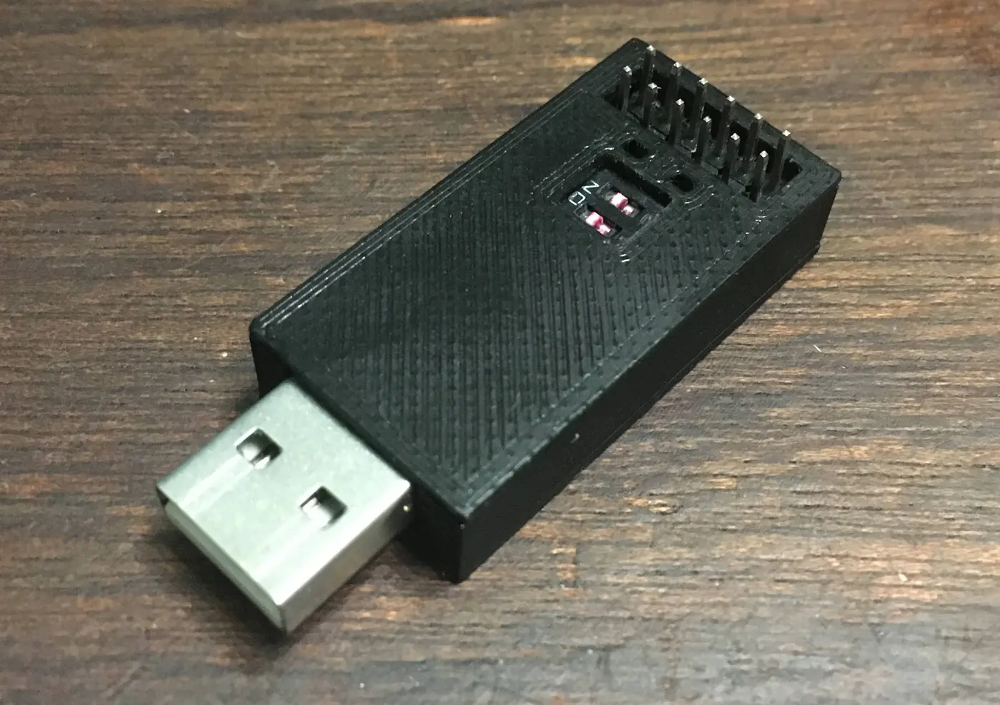

Description
A BadUSB is a device that emulates a keyboard which runs a pre-programmed set of key presses to perform a task. This can be used for penetration testing or repetitive administration tasks.
This project was created to give me an understanding on designing printed circuit boards (PCBs) and how to work with microcontrollers directly, instead of using development boards such as Arduinos. This gives flexibility and allows for more complex future projects.
It uses a microcontroller, the ATmega32u4, which emulates a keyboard and mouse to perform tasks. The task can be chosen by first programming which keys to be pressed then uploading it to the board.
Skills
- Designing circuits and PCBs
- Working with and designing circuits for microchips
- Creating small form factor electronics
- Soldering surface mount components
Closer Look

The main design considerations for the printed circuit board is the small form factor, to make it look like other USB thumb drives.
To achieve this goal I needed to use SMD parts which can be very small and only take up one side of the board, compared to the larger through hole devices.
A downside for these components is some of them can be hard to solder without bridging the connections.
The most important and intricate part of the PCB is the microcontroller, the ATmega32u4, and its required circuit.
The microcontroller is then connected to the USB (supplying power and data connections) and to the input and outputs of the board.
The code is written in C/C++ and uses the Arduino libraries to emulate the keyboard, the code is automatically ran when the device is plugged in.
I have written a template code which sets up the virtual keyboard, lights, etc so all the user has to do is code the task using functions that I have made.
Using this template I have written some examples, including one where a backup for a folder is created.
The board has switches built in to them, allowing for the user to choose between multiple programs.
There are also lights which show if there is an error or shows when the program is running or finished.
The switches and lights are programmable so can be used for other purposes too.
On the end of the board are 12 pins, plus seven pads on the underside, which can be used as general purpose input/output (I/O) pins.
This gives the board more functionality as it can be used as a normal Arduino or connect more devices to it.

The device sits inside a 3D printed case to give it a layer of protection and makes the BadUSB looks professional while maintaining usability.
Creating the Project
Version 1
This was my first PCB design, so I had to learn how to convert circuit schematics into a functioning PCB.
It was a test PCB and improvements were expected to be found when making and testing this design.
This is a sketch that I used to help plan the schematic and layout:

I started with the main component, the ATmega32u4, which requires multiple passive components to function properly.
Then I added the USB which gives the device power and data connections to the board. It was placed next to the microcontroller so the data lines would not have interference from other components or traces.
The rest of the components could be placed almost anywhere so were placed on the other side of the microcontroller.
Schematic:

The soldered PCB:


This version had reliability issues but managed to function enough to validate the concept. There were some other issues such as inconsistent component sizes, for example having a small oscillator with very large capacitors.
Version 2
Using what I learned from making my first PCB I was able to improve on the board. This new version fixed the issues from the previous version while maintaining and improving functionality while keeping the same footprint.
In order to improve the reliability of the device I looked for other circuits that used the ATmega32u4. I found the Teensy 2.0 which has a simpler and more robust circuit so I decided to use the mandatory components in my design.
Test points were added to help troubleshooting and the number of I/O pins were doubled to allow for expandability.
The board has more efficient component placement and I chose sensible component sizes.
Lastly I improved the silkscreen for better readability when soldering and using the device, and changed the PCB colour from green to black for a more professional look.
Schematic:

The soldered PCB:


I was pleased with this design as it met the design goals while still managing to have features, such as the I/O pins, for it to be used beyond its intended purpose.
Looking Forward
- I could expand on the idea of this USB platform, for example utilising storage in future devices.
- I now have the knowledge of how to use PCBs for future projects, and know what to learn for better and more complex designs.